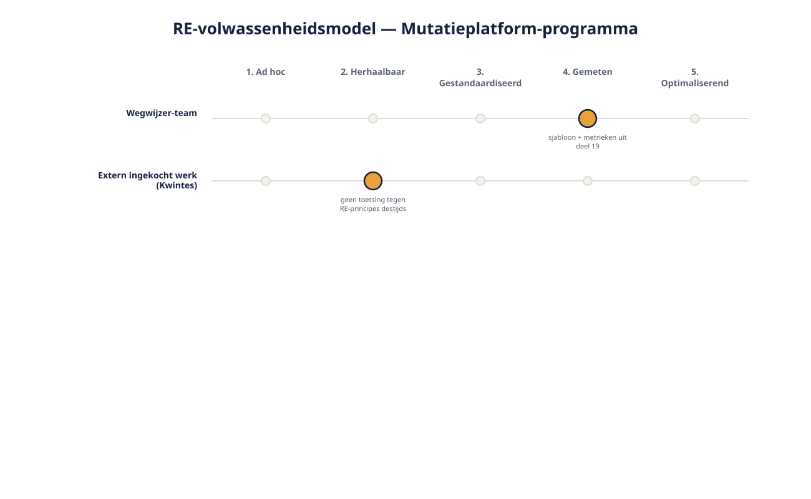
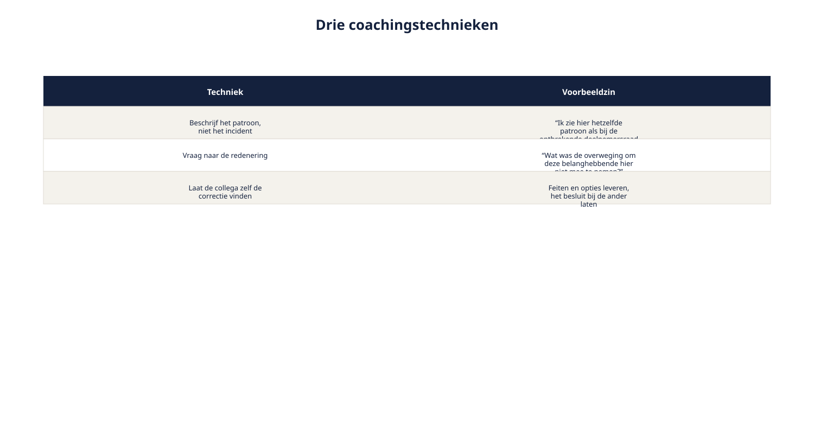
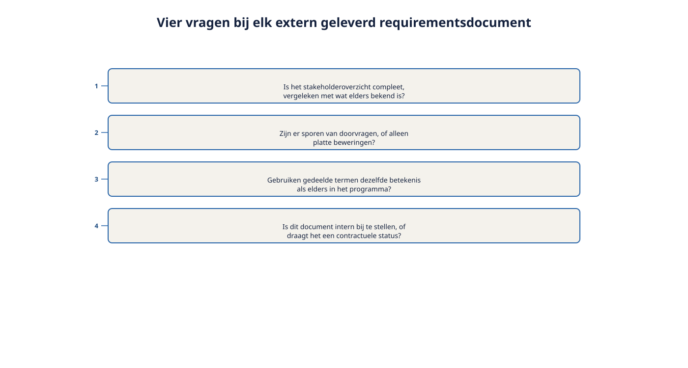

Deel 27 — Expert: kennisoverdracht en RE-volwassenheid
Reader · Ductus-cursus Requirements Engineering · niveau 3 (expert) · deel 27 van 30
Cursus Requirements Engineering — Ductus. Deze cursus bereidt voor op de CPRE-certificering van IREB, inclusief de Expert Level-eisen rond praktijk en kennisoverdracht, en is uitdrukkelijk geen vervanging van het officiële syllabus- en examenmateriaal.
Leerdoelen
Na dit deel kun je:
- het verschil uitleggen tussen goed eigen werk leveren en een organisatie structureel beter maken in requirements engineering;
- een RE-volwassenheidsmodel toepassen om de huidige stand van een organisatie te beoordelen;
- coachend feedback geven op het werk van een collega zonder het over te nemen;
- een geleerde les uit het Kwintes-dossier omzetten in herbruikbaar kennisoverdrachtsmateriaal.
27.1 Van eigen werk naar andermans groei
Hetty vraagt Ruben iets nieuws: niet alleen het Kwintes-dossier zelf goed afhandelen, maar ervoor zorgen dat een vergelijkbare situatie zich niet nog eens voordoet — bij Meridiaan, en bij toekomstige externe opdrachten. Dit is de kern van het Expert Level bij IREB: naast diepgaande praktijkervaring wordt kennisoverdracht gevraagd — het vermogen om anderen het vak beter te laten beheersen, niet alleen het zelf goed te beheersen.
Dit is een andere vaardigheid dan alles wat niveau 1, 2 en de Specialist-trap tot nu toe vroegen. Een Specialist levert een overtuigend, goed onderbouwd eigen oordeel (deel 23-26). Een Expert zorgt dat anderen tot dat niveau van oordeel kunnen komen, ook zonder dat de Expert er zelf bij is.
27.2 Een RE-volwassenheidsmodel
Om te kunnen adviseren over verbetering, is een gedeeld beeld nodig van waar een organisatie nu staat. Een eenvoudig, vijf-niveaus RE-volwassenheidsmodel:
| Niveau | Kenmerk |
|---|---|
| 1. Ad hoc | Elke requirements engineer werkt op eigen inzicht, geen gedeelde standaarden |
| 2. Herhaalbaar | Individuele teams hebben een eigen, werkende aanpak, maar niet gedeeld over teams heen |
| 3. Gestandaardiseerd | Een gedeeld sjabloon en gedeelde technieken over de organisatie heen (zoals het Ductus-sjabloon, deel 6, niveau 1) |
| 4. Gemeten | De organisatie meet actief RE-kwaliteit (vergelijk deel 19, niveau 2: metrieken) en stuurt daarop |
| 5. Optimaliserend | De organisatie leert structureel van eigen fouten en past de aanpak zelf voortdurend aan |

Toegepast op Meridiaan: het Wegwijzer-team werkte op niveau 3-4 (een gedeeld sjabloon, en metrieken uit deel 19). Het feit dat het Kwintes-document destijds geen enkele toetsing kreeg tegen de RE-principes van de organisatie, wijst op een organisatie die op dat moment, voor extern ingekocht werk, nog op niveau 1-2 functioneerde — geen gedeelde standaard werd aan een externe partij opgelegd of getoetst.
27.3 Coachend feedback geven
Een Expert die het werk van een collega beoordeelt, staat voor een andere opgave dan een Specialist die een geërfd document beoordeelt (deel 23-26): de collega is er wél, en moet er zelf beter van worden — niet zich veroordeeld voelen.
Beschrijf het patroon, niet het incident. In plaats van "deze requirement is fout", beter: "ik zie hier hetzelfde patroon als bij de ontbrekende deelnemersraad in het Kwintes-document (deel 23) — een belanghebbende die elders in het programma relevant bleek, ontbreekt hier ook." Dit koppelt het aan een leerbaar principe, niet aan een persoonlijke fout.
Vraag naar de redenering, oordeel niet meteen. "Wat was de overweging om deze belanghebbende hier niet mee te nemen?" opent een gesprek; "je bent een belanghebbende vergeten" sluit het.
Laat de collega zelf de correctie vinden. Vergelijkbaar met de rolgrens uit deel 1 (niveau 1): feiten en opties leveren, het besluit — hier: hoe te corrigeren — bij de ander laten, tenzij er expliciet om een pasklare oplossing wordt gevraagd.

27.4 Van geleerde les naar kennisoverdrachtsmateriaal
Het Kwintes-dossier bevat, na deel 23-26, een aantal concrete, herbruikbare lessen: het belang van een elicitatie-audit bij geërfd werk, het risico van stilzwijgend verschillende definities, de noodzaak om schaal-agile classificatie teamspecifiek te houden, het onderscheid tussen interne en contractuele baselines.
Een korte, herbruikbare checklist — bijvoorbeeld "vier vragen bij elk extern geleverd requirementsdocument" — is toegankelijker voor een brede groep collega's dan het volledige vakpaper-traject uit deel 23-26. Dit is de vertaalslag die een Expert maakt: van diepgaand, individueel Specialist-werk naar compact, breed inzetbaar organisatiemateriaal.

Wat kennisoverdracht niet is: het volledige vakpaper simpelweg rondsturen. Een Expert vertaalt de diepgang naar een vorm die anderen, met minder tijd en context, direct kunnen toepassen — dit is zelf een vaardigheid, niet slechts een kwestie van "delen".
Samenvatting
- Expert-niveau vraagt kennisoverdracht: anderen beter maken in het vak, niet alleen zelf goed werk leveren.
- Een RE-volwassenheidsmodel (vijf niveaus, van ad hoc tot optimaliserend) geeft een gedeeld beeld van waar een organisatie staat.
- Coachend feedback geven: patroon boven incident, vragen naar redenering, de collega zelf laten corrigeren.
- Kennisoverdrachtsmateriaal vertaalt diepgaand Specialist-werk naar compacte, breed toepasbare vorm — geen simpele doorverwijzing naar het volledige werk.
Begrippen
kennisoverdracht · RE-volwassenheidsmodel · coachende feedback · kennisoverdrachtsmateriaal
Leeswijzer naar het volgende deel
Deel 28 behandelt de tweede kant van de Expert-rol: governance op stelselniveau en het rechtstreeks adviseren van bestuur en toezichthouders.